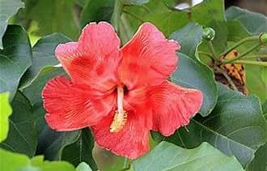
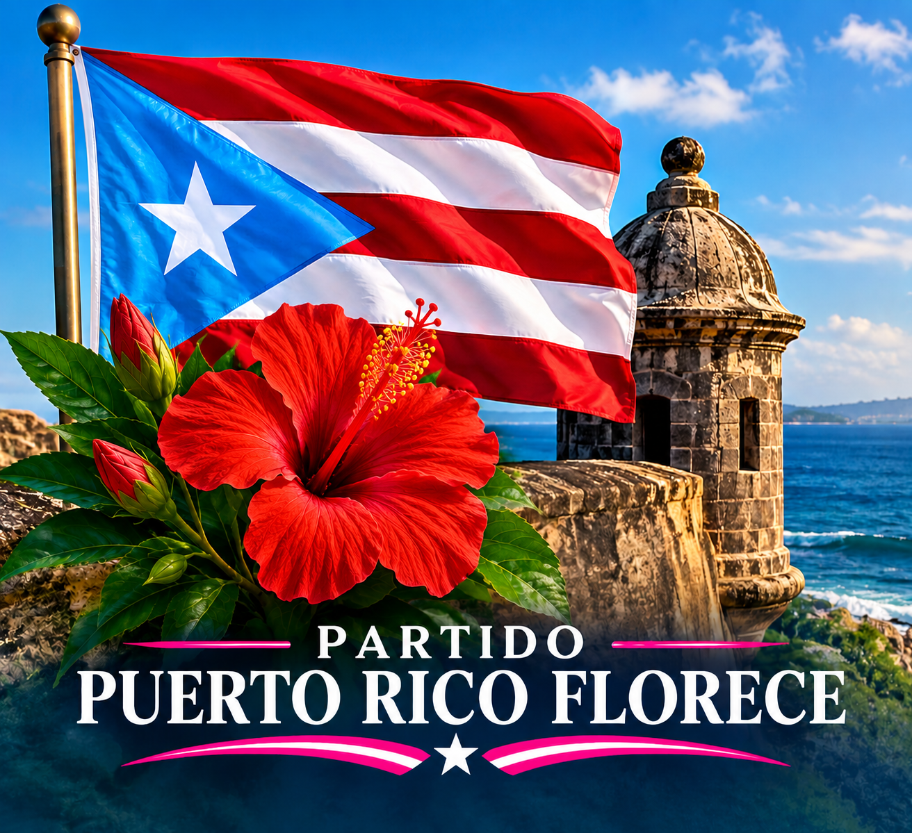

🌺
Nuestra visión
Un Puerto Rico moderno, próspero, seguro y con instituciones eficientes al servicio de la ciudadanía.


Un Puerto Rico que florece con esperanza, trabajo, justicia, transparencia y oportunidades para todos.
 .pr .flag .triangle{position:absolute;left:0;top:0;border-top:60px solid transparent;border-bottom:60px solid transparent;border-left:86px solid #75bde7;z-index:2}
.pr .flag .triangle{position:absolute;left:0;top:0;border-top:60px solid transparent;border-bottom:60px solid transparent;border-left:86px solid #75bde7;z-index:2}
Una propuesta política e institucional centrada en el servicio al pueblo, la transparencia, las oportunidades y el fortalecimiento de Puerto Rico.
Un Puerto Rico moderno, próspero, seguro y con instituciones eficientes al servicio de la ciudadanía.
Trabajar por una transformación responsable de Puerto Rico, fortaleciendo sus comunidades e instituciones.
El futuro de Puerto Rico se construye con la participación activa de su gente.
Conoce las áreas que formarán parte del portal oficial y de la plataforma programática.
Propuesta de Reforma Constitucional para la transformación de la Asamblea Legislativa de Puerto Rico en una Legislatura Unicameral, mediante un proceso constitucional, democrático y participativo.
Ver propuesta →Espacio oficial para consultar la Constitución del Partido, reglamentos, propuestas de gobierno, estudios jurídicos, documentos institucionales y publicaciones del Partido Puerto Rico Florece.
Ver documentos →Portal dedicado a los 78 municipios de Puerto Rico, con información sobre proyectos, necesidades, prioridades, desarrollo económico, infraestructura y participación ciudadana de cada comunidad.
Explorar los 78 municipios →Seleccione un municipio para conocer sus proyectos, necesidades, prioridades y oportunidades de desarrollo.
Seleccione un municipio para conocer sus proyectos, necesidades, prioridades y oportunidades de desarrollo.
Estructura oficial del Partido Puerto Rico Florece, incluyendo su dirección nacional, comités, organización territorial, responsabilidades y mecanismos de participación de sus miembros.
Conocer →Espacio oficial para comunicados, noticias, actividades, anuncios, eventos y novedades del Partido Puerto Rico Florece.
Ver noticias →Calendario oficial de reuniones, actividades, eventos, asambleas y encuentros del Partido Puerto Rico Florece en los 78 municipios de Puerto Rico.
Participar →Un gobierno al servicio del pueblo, con instituciones fuertes, transparentes y eficientes, que impulse el desarrollo económico, la educación, la salud, la seguridad y la justicia.
Esta sección será el centro documental del partido: propuestas, reglamentos, estudios, informes y publicaciones.
Queremos que la ciudadanía pueda conocer nuestras ideas, estudiar nuestras propuestas y participar en el desarrollo del proyecto.
ParticipaÚnete al Partido Puerto Rico Florece y participa en la construcción de un Puerto Rico con esperanza, trabajo, justicia, transparencia y oportunidades para todos.
Quiero participarEsta sección está preparada para incorporar el correo electrónico oficial, teléfono, redes sociales y formulario de contacto.
El Pueblo Playero
Impulsar el turismo costero, los pequeños negocios, la economía local y nuevas oportunidades para emprendedores y comerciantes.
Priorizar la modernización de carreteras, caminos municipales, infraestructura comunitaria, drenaje, agua, energía y conectividad digital.
Promover oportunidades educativas, capacitación técnica, formación profesional y programas de desarrollo para la juventud.
Fortalecer el acceso a servicios de salud, prevención, bienestar comunitario y programas dirigidos a las personas mayores.
Proteger las costas, recursos naturales y espacios comunitarios, promoviendo un desarrollo responsable y sostenible.
Promover vivienda digna, comunidades seguras y proyectos que mejoren la calidad de vida de las familias aguadeñas.
Fortalecer la participación de las comunidades en la identificación de necesidades y prioridades municipales.
Construir una Aguada con más oportunidades, desarrollo económico, infraestructura moderna, servicios públicos eficientes y participación ciudadana.
Ciudad del Gigante Dormido
Fortalecer la agricultura, la producción de café, los pequeños negocios, el empleo local y nuevas oportunidades de desarrollo económico.
Priorizar el mantenimiento y modernización de carreteras, caminos municipales, infraestructura comunitaria, agua, energía y conectividad digital.
Impulsar oportunidades educativas, capacitación técnica, desarrollo profesional y programas dirigidos a la juventud.
Promover el acceso a servicios de salud, prevención, bienestar comunitario y atención a las personas mayores.
Fomentar la conservación de los recursos naturales, el turismo de naturaleza y el aprovechamiento responsable de las áreas montañosas y lagos.
Promover comunidades seguras, vivienda digna y programas dirigidos a mejorar la calidad de vida de las familias.
Promover la participación de las comunidades en la identificación de necesidades y prioridades municipales.
Construir un Adjuntas con más oportunidades, infraestructura moderna, desarrollo económico, servicios públicos eficientes y participación ciudadana.
El Pueblo del Oeste
Impulsar el desarrollo económico, el comercio local, el turismo, la industria y nuevas oportunidades de empleo para las familias de Aguadilla.
Priorizar el mantenimiento de carreteras, caminos, espacios públicos, infraestructura municipal, agua, energía y conectividad digital.
Promover capacitación técnica, educación profesional, oportunidades para la juventud y alianzas con instituciones educativas.
Fortalecer el acceso a servicios de salud, prevención, bienestar comunitario y programas de apoyo para las personas mayores.
Fomentar el turismo costero y de naturaleza, proteger los recursos naturales y promover el desarrollo responsable de las zonas costeras.
Promover vivienda digna, comunidades seguras y programas que mejoren la calidad de vida de las familias aguadillanas.
Fortalecer la participación de las comunidades en la identificación de necesidades y prioridades para el desarrollo municipal.
Construir un Aguadilla con mayores oportunidades económicas, infraestructura moderna, servicios públicos eficientes, protección ambiental y participación ciudadana.
El Pueblo del Jíbaro
Impulsar el comercio local, el desarrollo de pequeñas empresas, la agricultura y nuevas oportunidades de empleo para las familias de Aguas Buenas.
Priorizar el mantenimiento de carreteras, caminos municipales, espacios públicos, sistemas de agua, energía y conectividad digital.
Promover capacitación técnica, educación profesional, actividades para la juventud y alianzas con instituciones educativas.
Fortalecer el acceso a servicios de salud, prevención, bienestar comunitario y programas de apoyo para las personas mayores.
Promover el turismo de naturaleza, proteger los recursos naturales y desarrollar iniciativas ambientales que beneficien a las comunidades.
Promover vivienda digna, comunidades seguras y programas dirigidos a mejorar la calidad de vida de las familias aguasbonenses.
Fortalecer la participación de las comunidades en la identificación de necesidades y prioridades para el desarrollo municipal.
Construir un Aguas Buenas con mayores oportunidades económicas, infraestructura adecuada, servicios públicos eficientes, protección ambiental y participación ciudadana.
La Ciudad de las Flores
Impulsar el comercio local, la agricultura, las pequeñas empresas y nuevas oportunidades de empleo para las familias de Aibonito.
Priorizar el mantenimiento de carreteras, caminos municipales, espacios públicos, agua, energía y conectividad digital.
Promover capacitación técnica, educación profesional, actividades para la juventud y alianzas con instituciones educativas.
Fortalecer el acceso a servicios de salud, prevención, bienestar comunitario y programas de apoyo para las personas mayores.
Promover el turismo de naturaleza y montaña, proteger los recursos naturales y desarrollar iniciativas ambientales responsables.
Promover vivienda digna, comunidades seguras y programas que mejoren la calidad de vida de las familias aiboniteñas.
Fortalecer la participación de las comunidades en la identificación de necesidades y prioridades para el desarrollo municipal.
Construir un Aibonito con mayores oportunidades económicas, infraestructura adecuada, servicios públicos eficientes, protección ambiental y participación ciudadana.
El Pueblo del Gringo
Impulsar el comercio local, la agricultura, la industria, el turismo y nuevas oportunidades de empleo para las familias de Añasco.
Priorizar el mantenimiento de carreteras, caminos municipales, espacios públicos, agua, energía y conectividad digital.
Promover capacitación técnica, educación profesional, actividades para la juventud y alianzas con instituciones educativas.
Fortalecer el acceso a servicios de salud, prevención, bienestar comunitario y programas de apoyo para las personas mayores.
Promover el turismo costero y de naturaleza, proteger los recursos naturales y fomentar el desarrollo responsable de las zonas costeras.
Promover vivienda digna, comunidades seguras y programas que mejoren la calidad de vida de las familias añasqueñas.
Fortalecer la participación de las comunidades en la identificación de necesidades y prioridades para el desarrollo municipal.
Construir un Añasco con mayores oportunidades económicas, infraestructura adecuada, servicios públicos eficientes, protección ambiental y participación ciudadana.
La Villa del Capitán Correa
Impulsar el comercio local, la agricultura, la industria, el turismo y nuevas oportunidades de empleo para las familias de Arecibo.
Priorizar el mantenimiento de carreteras, caminos municipales, espacios públicos, agua, energía y conectividad digital.
Promover capacitación técnica, educación profesional, actividades para la juventud y alianzas con instituciones educativas.
Fortalecer el acceso a servicios de salud, prevención, bienestar comunitario y programas de apoyo para las personas mayores.
Promover el turismo costero y de naturaleza, proteger los recursos naturales y fomentar el desarrollo responsable de las zonas costeras.
Promover vivienda digna, comunidades seguras y programas que mejoren la calidad de vida de las familias arecibeñas.
Fortalecer la participación de las comunidades en la identificación de necesidades y prioridades para el desarrollo municipal.
Construir un Arecibo con mayores oportunidades económicas, infraestructura adecuada, servicios públicos eficientes, protección ambiental y participación ciudadana.
El Pueblo Inconcluso
Impulsar el comercio local, la agricultura, la pesca, el turismo y nuevas oportunidades de empleo para las familias de Arroyo.
Priorizar el mantenimiento de carreteras, caminos municipales, espacios públicos, agua, energía y conectividad digital.
Promover capacitación técnica, educación profesional, actividades para la juventud y alianzas con instituciones educativas.
Fortalecer el acceso a servicios de salud, prevención, bienestar comunitario y programas de apoyo para las personas mayores.
Promover el turismo costero, proteger los recursos naturales y fomentar iniciativas ambientales responsables.
Promover vivienda digna, comunidades seguras y programas que mejoren la calidad de vida de las familias arroyanas.
Fortalecer la participación de las comunidades en la identificación de necesidades y prioridades para el desarrollo municipal.
Construir un Arroyo con mayores oportunidades económicas, infraestructura adecuada, servicios públicos eficientes, protección ambiental y participación ciudadana.
La Ciudad de las Piñas
Impulsar el comercio local, la agricultura, la industria, el turismo y nuevas oportunidades de empleo para las familias de Barceloneta.
Priorizar el mantenimiento de carreteras, caminos municipales, espacios públicos, agua, energía y conectividad digital.
Promover capacitación técnica, educación profesional, actividades para la juventud y alianzas con instituciones educativas.
Fortalecer el acceso a servicios de salud, prevención, bienestar comunitario y programas de apoyo para las personas mayores.
Promover el turismo costero y de naturaleza, proteger los recursos naturales y fomentar el desarrollo responsable de las zonas costeras.
Promover vivienda digna, comunidades seguras y programas que mejoren la calidad de vida de las familias barcelonetenses.
Fortalecer la participación de las comunidades en la identificación de necesidades y prioridades para el desarrollo municipal.
Construir una Barceloneta con mayores oportunidades económicas, infraestructura adecuada, servicios públicos eficientes, protección ambiental y participación ciudadana.
La Cuna de Próceres
Impulsar el comercio local, la agricultura, las pequeñas empresas, el turismo y nuevas oportunidades de empleo para las familias de Barranquitas.
Priorizar el mantenimiento de carreteras, caminos municipales, espacios públicos, agua, energía y conectividad digital.
Promover capacitación técnica, educación profesional, actividades para la juventud y alianzas con instituciones educativas.
Fortalecer el acceso a servicios de salud, prevención, bienestar comunitario y programas de apoyo para las personas mayores.
Promover el turismo de montaña y naturaleza, proteger los recursos naturales y fomentar iniciativas ambientales responsables.
Promover vivienda digna, comunidades seguras y programas que mejoren la calidad de vida de las familias barranquiteñas.
Fortalecer la participación de las comunidades en la identificación de necesidades y prioridades para el desarrollo municipal.
Construir un Barranquitas con mayores oportunidades económicas, infraestructura adecuada, servicios públicos eficientes, protección ambiental y participación ciudadana.
El Pueblo del Chicharrón
Impulsar el comercio local, las pequeñas empresas, la industria, la innovación y nuevas oportunidades de empleo para las familias de Bayamón.
Priorizar el mantenimiento de carreteras, vías municipales, espacios públicos, agua, energía, transporte y conectividad digital.
Promover capacitación técnica, educación profesional, oportunidades para la juventud y alianzas con instituciones educativas.
Fortalecer el acceso a servicios de salud, prevención, bienestar comunitario y programas de apoyo para las personas mayores.
Promover espacios recreativos, proteger las áreas naturales y fomentar iniciativas ambientales y de desarrollo urbano responsable.
Promover vivienda digna, comunidades seguras y programas que mejoren la calidad de vida de las familias bayamonesas.
Fortalecer la participación de las comunidades en la identificación de necesidades y prioridades para el desarrollo municipal.
Construir un Bayamón con mayores oportunidades económicas, infraestructura moderna, servicios públicos eficientes, protección ambiental y participación ciudadana.
El Pueblo del Coquí
Impulsar el comercio local, la agricultura, la pesca, el turismo y nuevas oportunidades de empleo para las familias de Cabo Rojo.
Priorizar el mantenimiento de carreteras, caminos municipales, espacios públicos, agua, energía y conectividad digital.
Promover capacitación técnica, educación profesional, actividades para la juventud y alianzas con instituciones educativas.
Fortalecer el acceso a servicios de salud, prevención, bienestar comunitario y programas de apoyo para las personas mayores.
Promover el turismo costero y de naturaleza, proteger las áreas naturales y fomentar un desarrollo responsable de las zonas costeras.
Promover vivienda digna, comunidades seguras y programas que mejoren la calidad de vida de las familias caborrojeñas.
Fortalecer la participación de las comunidades en la identificación de necesidades y prioridades para el desarrollo municipal.
Construir un Cabo Rojo con mayores oportunidades económicas, infraestructura adecuada, servicios públicos eficientes, protección ambiental y participación ciudadana.
Caguas es uno de los principales municipios del interior de Puerto Rico y constituye un importante centro urbano, comercial, educativo y cultural.
Fortalecer la administración municipal mediante transparencia, eficiencia en los servicios públicos, participación ciudadana y planificación responsable.
Impulsar el desarrollo de pequeños y medianos negocios, promover la creación de empleos y apoyar nuevas iniciativas empresariales y comerciales.
Promover servicios de salud accesibles, programas de prevención y apoyo a las comunidades, personas mayores y familias.
Apoyar iniciativas educativas, capacitación laboral, tecnología y oportunidades para estudiantes y jóvenes.
Priorizar el mantenimiento de carreteras, espacios públicos, infraestructura municipal y servicios esenciales.
Promover la protección de los recursos naturales, áreas verdes, manejo responsable de desperdicios y proyectos de sostenibilidad.
Fomentar la participación de los residentes de Caguas en los procesos de planificación y desarrollo de sus comunidades.
El objetivo es desarrollar propuestas municipales que respondan a las necesidades de Caguas y contribuyan al desarrollo integral de Puerto Rico.
Camuy es un municipio del norte de Puerto Rico reconocido por su riqueza natural, cultural e histórica y por el carácter de sus comunidades.
Promover una administración municipal transparente, eficiente y cercana a los ciudadanos, fortaleciendo la participación comunitaria.
Apoyar a los comerciantes, pequeños y medianos negocios, agricultores y emprendedores, fomentando nuevas oportunidades económicas y empleos.
Impulsar el turismo responsable y la protección de los recursos naturales de Camuy, promoviendo sus atractivos como parte del desarrollo económico municipal.
Promover programas de prevención, bienestar comunitario y servicios dirigidos a las familias, personas mayores y poblaciones vulnerables.
Apoyar iniciativas educativas, capacitación tecnológica, desarrollo de destrezas laborales y oportunidades para los jóvenes.
Priorizar el mantenimiento de carreteras, caminos municipales, espacios públicos y servicios esenciales para las comunidades.
Fomentar la conservación ambiental, el manejo responsable de desperdicios, la protección de áreas naturales y proyectos de sostenibilidad.
Fortalecer los mecanismos de participación de los residentes de Camuy en la identificación de necesidades y en la planificación del desarrollo municipal.
Desarrollar propuestas municipales orientadas al bienestar de las comunidades de Camuy y a su integración en una visión de desarrollo sostenible para Puerto Rico.
Canóvanas es un municipio de la región noreste de Puerto Rico, con comunidades diversas, actividad comercial y una ubicación estratégica para el desarrollo regional.
Promover una administración municipal transparente, eficiente y cercana a las comunidades, fortaleciendo la participación ciudadana.
Apoyar a pequeños y medianos comerciantes, emprendedores y empresas locales, fomentando la creación de empleos y nuevas oportunidades económicas.
Promover programas de prevención, bienestar comunitario y apoyo a las familias, personas mayores y poblaciones vulnerables.
Impulsar oportunidades educativas, capacitación tecnológica, formación laboral y programas dirigidos a los jóvenes.
Priorizar el mantenimiento de carreteras, caminos municipales, instalaciones públicas y servicios esenciales.
Promover la conservación de los recursos naturales, el manejo responsable de desperdicios y proyectos de sostenibilidad.
Crear espacios para que los residentes participen en la identificación de necesidades y en la planificación del desarrollo de sus comunidades.
Desarrollar propuestas municipales dirigidas al bienestar de las comunidades de Canóvanas y a su integración en una visión de desarrollo sostenible para Puerto Rico.
Carolina es un municipio de gran importancia económica, turística y urbana en Puerto Rico, con una ubicación estratégica en la zona metropolitana y una amplia diversidad de comunidades.
Promover una administración municipal transparente, eficiente y cercana a los ciudadanos, fortaleciendo la participación de las comunidades en los asuntos municipales.
Impulsar el comercio local, apoyar a pequeños y medianos negocios, fomentar el emprendimiento y promover oportunidades de empleo.
Fortalecer el potencial turístico y económico de Carolina, promoviendo sus recursos, espacios recreativos y actividades culturales como elementos del desarrollo municipal.
Promover programas de prevención, bienestar comunitario y apoyo a las familias, personas mayores y comunidades que necesiten servicios de asistencia.
Apoyar iniciativas educativas, capacitación tecnológica, formación laboral y programas que amplíen las oportunidades para los jóvenes.
Priorizar el mantenimiento de carreteras, instalaciones públicas, espacios comunitarios y servicios esenciales, promoviendo una movilidad urbana eficiente.
Fomentar la protección de los recursos naturales, la conservación de áreas verdes, el manejo responsable de desperdicios y proyectos de sostenibilidad.
Fortalecer los mecanismos de participación ciudadana para que los residentes puedan aportar ideas y participar en la planificación del futuro de sus comunidades.
Desarrollar propuestas municipales orientadas al bienestar de las comunidades de Carolina y a su integración dentro de una visión de desarrollo sostenible para Puerto Rico.
Cataño es un municipio de la zona metropolitana de Puerto Rico, reconocido por su ubicación frente a la bahía de San Juan y por la importancia de sus comunidades, actividad comercial y conexión con otros municipios del área metropolitana.
Promover una administración municipal transparente, eficiente y cercana a los ciudadanos, fortaleciendo la participación de las comunidades en las decisiones que afectan su municipio.
Apoyar a los pequeños y medianos comerciantes, emprendedores y empresas locales, promoviendo oportunidades de empleo y desarrollo económico.
Aprovechar responsablemente la ubicación costera de Cataño para promover actividades culturales, recreativas y turísticas, protegiendo al mismo tiempo sus recursos naturales.
Promover programas de prevención, bienestar comunitario y apoyo a las familias, personas mayores y poblaciones vulnerables.
Apoyar programas educativos, capacitación tecnológica, formación laboral y oportunidades de desarrollo para los jóvenes.
Priorizar el mantenimiento de carreteras, instalaciones públicas, espacios comunitarios y servicios esenciales, fortaleciendo la movilidad y conectividad municipal.
Fomentar la protección de la bahía, las áreas costeras y los recursos naturales, además del manejo responsable de desperdicios y proyectos de sostenibilidad.
Crear mecanismos para que los residentes participen activamente en la identificación de necesidades y en la planificación del desarrollo de sus comunidades.
Desarrollar propuestas municipales orientadas al bienestar de las comunidades de Cataño y a su integración dentro de una visión de desarrollo sostenible para Puerto Rico.
Cayey es un municipio de la región central de Puerto Rico, caracterizado por su entorno montañoso, sus comunidades y su importancia dentro de la zona central de la Isla.
Promover una administración municipal transparente, eficiente y cercana a los ciudadanos, fortaleciendo la participación de las comunidades.
Apoyar a comerciantes, pequeños y medianos negocios, emprendedores y proyectos que contribuyan a la creación de empleos y al crecimiento económico local.
Promover responsablemente los atractivos naturales, paisajísticos y culturales de Cayey como parte de una estrategia de turismo y desarrollo económico sostenible.
Impulsar programas de prevención, bienestar comunitario y apoyo a las familias, personas mayores y poblaciones vulnerables.
Apoyar iniciativas educativas, capacitación tecnológica, formación laboral y oportunidades de desarrollo para los jóvenes.
Priorizar el mantenimiento de carreteras, caminos municipales, instalaciones públicas y servicios esenciales para las comunidades.
Fomentar la conservación de los recursos naturales, áreas verdes y ecosistemas, junto con el manejo responsable de desperdicios y proyectos de sostenibilidad.
Fortalecer los espacios de participación ciudadana para que los residentes puedan aportar ideas y colaborar en la planificación del desarrollo municipal.
Desarrollar propuestas municipales orientadas al bienestar de las comunidades de Cayey y a su integración dentro de una visión de desarrollo sostenible para Puerto Rico.
Ceiba es un municipio de la región este de Puerto Rico, reconocido por su entorno natural, sus áreas costeras y su importancia estratégica dentro de la región.
Promover una administración municipal transparente, eficiente y cercana a los ciudadanos, fortaleciendo la participación de las comunidades.
Apoyar a los pequeños y medianos comerciantes, emprendedores y empresas locales, fomentando oportunidades de empleo y desarrollo económico.
Impulsar un turismo responsable basado en los recursos naturales, costeros y recreativos de Ceiba, procurando su conservación y aprovechamiento sostenible.
Promover programas de prevención, bienestar comunitario y apoyo a las familias, personas mayores y poblaciones vulnerables.
Apoyar iniciativas educativas, capacitación tecnológica, formación laboral y oportunidades de desarrollo para los jóvenes.
Priorizar el mantenimiento de carreteras, instalaciones públicas, espacios comunitarios y servicios esenciales.
Fomentar la protección de los ecosistemas, áreas verdes y recursos costeros, junto con programas de conservación y sostenibilidad.
Fortalecer los espacios de participación ciudadana para que los residentes puedan aportar ideas y participar en la planificación del desarrollo municipal.
Desarrollar propuestas municipales orientadas al bienestar de las comunidades de Ceiba y a su integración dentro de una visión de desarrollo sostenible para Puerto Rico.